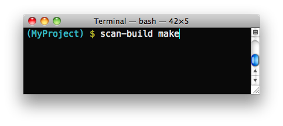
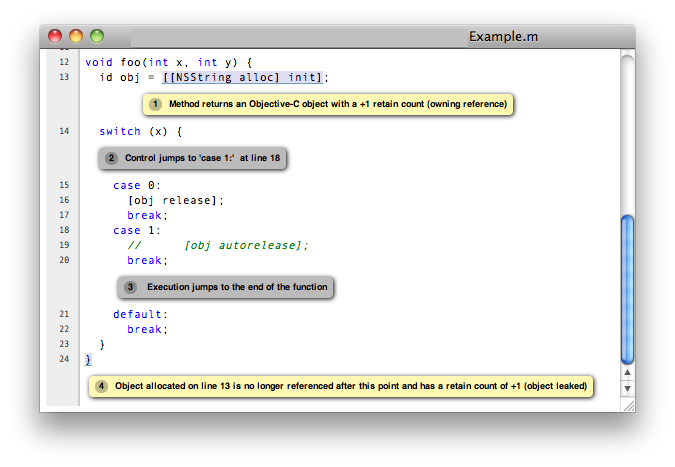

scan-build: running the analyzer from the command line
What is it?scan-build is a command line utility that enables a user to run the static analyzer over their codebase as part of performing a regular build (from the command line). How does it work?During a project build, as source files are compiled they are also analyzed in tandem by the static analyzer. Upon completion of the build, results are then presented to the user within a web browser. Will it work with any build system?scan-build has little or no knowledge about how you build your code. It works by overriding the CC and CXX environment variables to (hopefully) change your build to use a "fake" compiler instead of the one that would normally build your project. This fake compiler executes either clang or gcc (depending on the platform) to compile your code and then executes the static analyzer to analyze your code. This "poor man's interposition" works amazingly well in many cases and falls down in others. Please consult the information on this page on making the best use of scan-build, which includes getting it to work when the aforementioned hack fails to work. |
  Viewing static analyzer results in a web browser |
{kind=link}
Contents
Getting Started
The scan-build command can be used to analyze an entire project by essentially interposing on a project's build process. This means that to run the analyzer using scan-build, you will use scan-build to analyze the source files compiled by gcc/clang during a project build. This means that any files that are not compiled will also not be analyzed.
Basic Usage
Basic usage of scan-build is designed to be simple: just place the word "scan-build" in front of your build command:
$ scan-build make $ scan-build xcodebuild
In the first case scan-build analyzes the code of a project built with make and in the second case scan-build analyzes a project built using xcodebuild.
Here is the general format for invoking scan-build:
$ scan-build [scan-build options] <command> [command options]
Operationally, scan-build literally runs <command> with all of the subsequent options passed to it. For example, one can pass -j4 to make get a parallel build over 4 cores:
$ scan-build make -j4
In almost all cases, scan-build makes no effort to interpret the options after the build command; it simply passes them through. In general, scan-build should support parallel builds, but not distributed builds.
It is also possible to use scan-build to analyze specific files:
$ scan-build gcc -c t1.c t2.c
This example causes the files t1.c and t2.c to be analyzed.
For Windows Users
Windows users must have Perl installed to use scan-build.
scan-build.bat script allows you to launch scan-build in the same way as it described in the Basic Usage section above. To invoke scan-build from an arbitrary location, add the path to the folder containing scan-build.bat to your PATH environment variable.
If you have unexpected compilation/make problems when running scan-build with MinGW/MSYS the following information may be helpful:
- If getting unexpected "fatal error: no input files" while building with MSYS make from the Windows cmd, try one of these solutions:
- Use MinGW mingw32-make instead of MSYS make and exclude the path to MSYS from PATH to prevent mingw32-make from using MSYS utils. MSYS utils are dependent on the MSYS runtime and they are not intended for being run from the Windows cmd. Specifically, makefile commands with backslashed quotes may be heavily corrupted when passed for execution.
- Run make from the sh shell:
$ scan-build [scan-build options] sh -c "make [make options]" - If getting "Error : *** target pattern contains no `%'" while using GNU Make 3.81, try to use another version of make.
Other Options
As mentioned above, extra options can be passed to scan-build. These options prefix the build command. For example:
$ scan-build -k -V make $ scan-build -k -V xcodebuild
Here is a subset of useful options:
| Option | Description |
| -o | Target directory for HTML report files. Subdirectories will be created as needed to represent separate "runs" of the analyzer. If this option is not specified, a directory is created in /tmp to store the reports. |
| -h (or no arguments) | Display all scan-build options. |
| -k --keep-going | Add a "keep on
going" option to the specified build command. This option currently supports make and xcodebuild. This is a convenience option; one can specify this behavior directly using build options. |
| -v | Verbose output from scan-build and the analyzer. A second and third "-v" increases verbosity, and is useful for filing bug reports against the analyzer. |
| -V | View analysis results in a web browser when the build command completes. |
| --use-analyzer Xcode or --use-analyzer [path to clang] | scan-build uses the 'clang' executable relative to itself for static analysis. One can override this behavior with this option by using the 'clang' packaged with Xcode (on OS X) or from the PATH. |
A complete list of options can be obtained by running scan-build with no arguments.
Output of scan-build
The output of scan-build is a set of HTML files, each one which represents a separate bug report. A single index.html file is generated for surveying all of the bugs. You can then just open index.html in a web browser to view the bug reports.
Where the HTML files are generated is specified with a -o option to scan-build. If -o isn't specified, a directory in /tmp is created to store the files (scan-build will print a message telling you where they are). If you want to view the reports immediately after the build completes, pass -V to scan-build.
Recommended Usage Guidelines
This section describes a few recommendations with running the analyzer.
ALWAYS analyze a project in its "debug" configuration
Most projects can be built in a "debug" mode that enables assertions. Assertions are picked up by the static analyzer to prune infeasible paths, which in some cases can greatly reduce the number of false positives (bogus error reports) emitted by the tool.
Use verbose output when debugging scan-build
scan-build takes a -v option to emit verbose output about what it's doing; two -v options emit more information. Redirecting the output of scan-build to a text file (make sure to redirect standard error) is useful for filing bug reports against scan-build or the analyzer, as we can see the exact options (and files) passed to the analyzer. For more comprehensible logs, don't perform a parallel build.
Run './configure' through scan-build
If an analyzed project uses an autoconf generated configure script, you will probably need to run configure script through scan-build in order to analyze the project.
Example
$ scan-build ./configure $ scan-build make
The reason configure also needs to be run through scan-build is because scan-build scans your source files by interposing on the compiler. This interposition is currently done by scan-build temporarily setting the environment variable CC to ccc-analyzer. The program ccc-analyzer acts like a fake compiler, forwarding its command line arguments over to the compiler to perform regular compilation and clang to perform static analysis.
Running configure typically generates makefiles that have hardwired paths to the compiler, and by running configure through scan-build that path is set to ccc-analyzer.
Analyzing iPhone Projects
Conceptually Xcode projects for iPhone applications are nearly the same as their cousins for desktop applications. scan-build can analyze these projects as well, but users often encounter problems with just building their iPhone projects from the command line because there are a few extra preparative steps they need to take (e.g., setup code signing).
Recommendation: use "Build and Analyze"
The absolute easiest way to analyze iPhone projects is to use the Build and Analyze feature in Xcode 3.2 (which is based on the Clang Static Analyzer). There a user can analyze their project with the click of a button without most of the setup described later.
Instructions are available on this website on how to use open source builds of the analyzer as a replacement for the one bundled with Xcode.
Using scan-build directly
If you wish to use scan-build with your iPhone project, keep the following things in mind:
- Analyze your project in the Debug configuration, either by setting this as your configuration with Xcode or by passing -configuration Debug to xcodebuild.
- Analyze your project using the Simulator as your base SDK. It is possible to analyze your code when targeting the device, but this is much easier to do when using Xcode's Build and Analyze feature.
- Check that your code signing SDK is set to the simulator SDK as well, and make sure this option is set to Don't Code Sign.
Note that you can most of this without actually modifying your project. For example, if your application targets iPhoneOS 2.2, you could run scan-build in the following manner from the command line:
$ scan-build xcodebuild -configuration Debug -sdk iphonesimulator2.2Alternatively, if your application targets iPhoneOS 3.0:
$ scan-build xcodebuild -configuration Debug -sdk iphonesimulator3.0
Gotcha: using the right compiler
Recall that scan-build analyzes your project by using a compiler to compile the project and clang to analyze your project. The script uses simple heuristics to determine which compiler should be used (it defaults to clang on Darwin and gcc on other platforms). When analyzing iPhone projects, scan-build may pick the wrong compiler than the one Xcode would use to build your project. For example, this could be because multiple versions of a compiler may be installed on your system, especially if you are developing for the iPhone.
When compiling your application to run on the simulator, it is important that scan-build finds the correct version of gcc/clang. Otherwise, you may see strange build errors that only happen when you run scan-build.
scan-build provides the --use-cc and --use-c++ options to hardwire which compiler scan-build should use for building your code. Note that although you are chiefly interested in analyzing your project, keep in mind that running the analyzer is intimately tied to the build, and not being able to compile your code means it won't get fully analyzed (if at all).
If you aren't certain which compiler Xcode uses to build your project, try just running xcodebuild (without scan-build). You should see the full path to the compiler that Xcode is using, and use that as an argument to --use-cc.